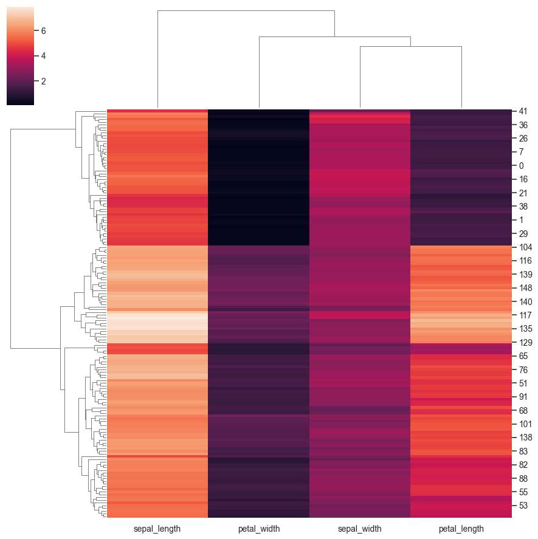
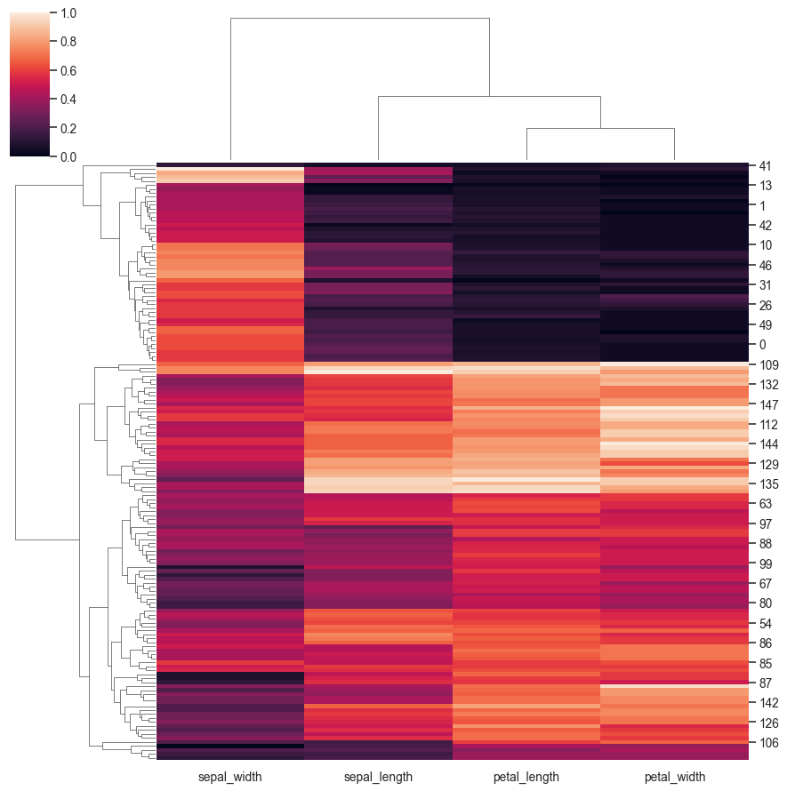
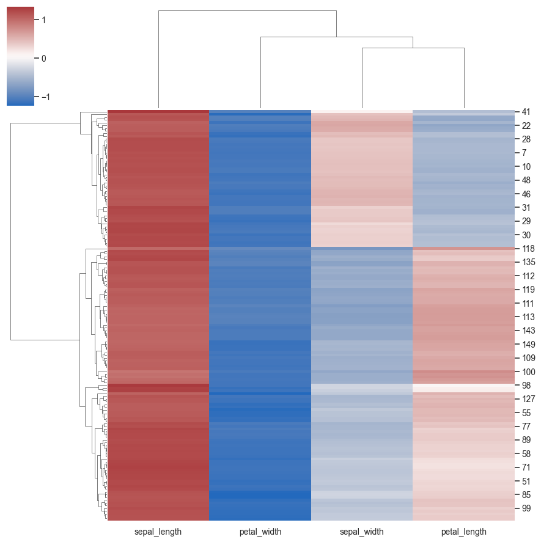

seaborn.clustermap¶
-
seaborn.clustermap(data, pivot_kws=None, method='average', metric='euclidean', z_score=None, standard_scale=None, figsize=None, cbar_kws=None, row_cluster=True, col_cluster=True, row_linkage=None, col_linkage=None, row_colors=None, col_colors=None, mask=None, **kwargs)¶ Plot a hierarchically clustered heatmap of a pandas DataFrame
Parameters: data: pandas.DataFrame
Rectangular data for clustering. Cannot contain NAs.
pivot_kws : dict, optional
If data is a tidy dataframe, can provide keyword arguments for pivot to create a rectangular dataframe.
method : str, optional
Linkage method to use for calculating clusters. See scipy.cluster.hierarchy.linkage documentation for more information: http://docs.scipy.org/doc/scipy/reference/generated/scipy.cluster.hierarchy.linkage.html
metric : str, optional
Distance metric to use for the data. See scipy.spatial.distance.pdist documentation for more options http://docs.scipy.org/doc/scipy/reference/generated/scipy.spatial.distance.pdist.html
z_score : int or None, optional
Either 0 (rows) or 1 (columns). Whether or not to calculate z-scores for the rows or the columns. Z scores are: z = (x - mean)/std, so values in each row (column) will get the mean of the row (column) subtracted, then divided by the standard deviation of the row (column). This ensures that each row (column) has mean of 0 and variance of 1.
standard_scale : int or None, optional
Either 0 (rows) or 1 (columns). Whether or not to standardize that dimension, meaning for each row or column, subtract the minimum and divide each by its maximum.
figsize: tuple of two ints, optional
Size of the figure to create.
cbar_kws : dict, optional
Keyword arguments to pass to
cbar_kwsinheatmap, e.g. to add a label to the colorbar.{row,col}_cluster : bool, optional
If True, cluster the {rows, columns}.
{row,col}_linkage : numpy.array, optional
Precomputed linkage matrix for the rows or columns. See scipy.cluster.hierarchy.linkage for specific formats.
{row,col}_colors : list-like, optional
List of colors to label for either the rows or columns. Useful to evaluate whether samples within a group are clustered together. Can use nested lists for multiple color levels of labeling.
mask : boolean array or DataFrame, optional
If passed, data will not be shown in cells where
maskis True. Cells with missing values are automatically masked. Only used for visualizing, not for calculating.kwargs : other keyword arguments
All other keyword arguments are passed to
sns.heatmapReturns: clustergrid : ClusterGrid
A ClusterGrid instance.
Notes
The returned object has a
savefigmethod that should be used if you want to save the figure object without clipping the dendrograms.To access the reordered row indices, use:
clustergrid.dendrogram_row.reordered_indColumn indices, use:
clustergrid.dendrogram_col.reordered_indExamples
Plot a clustered heatmap:
>>> import seaborn as sns; sns.set() >>> flights = sns.load_dataset("flights") >>> flights = flights.pivot("month", "year", "passengers") >>> g = sns.clustermap(flights)
Don’t cluster one of the axes:
>>> g = sns.clustermap(flights, col_cluster=False)

Use a different colormap and add lines to separate the cells:
>>> cmap = sns.cubehelix_palette(as_cmap=True, rot=-.3, light=1) >>> g = sns.clustermap(flights, cmap=cmap, linewidths=.5)

Use a different figure size:
>>> g = sns.clustermap(flights, cmap=cmap, figsize=(7, 5))

Standardize the data across the columns:
>>> g = sns.clustermap(flights, standard_scale=1)
Normalize the data across the rows:
>>> g = sns.clustermap(flights, z_score=0)

Use a different clustering method:
>>> g = sns.clustermap(flights, method="single", metric="cosine")
Add colored labels on one of the axes:
>>> season_colors = (sns.color_palette("BuPu", 3) + ... sns.color_palette("RdPu", 3) + ... sns.color_palette("YlGn", 3) + ... sns.color_palette("OrRd", 3)) >>> g = sns.clustermap(flights, row_colors=season_colors)
